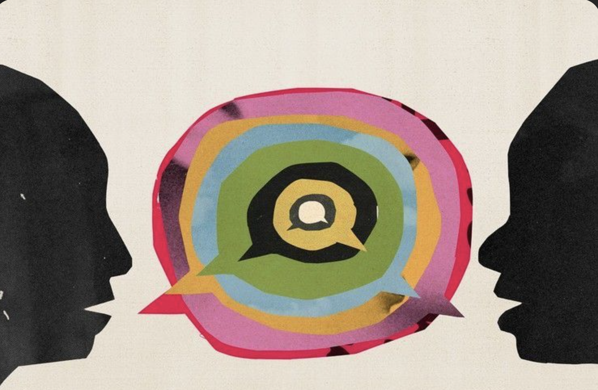
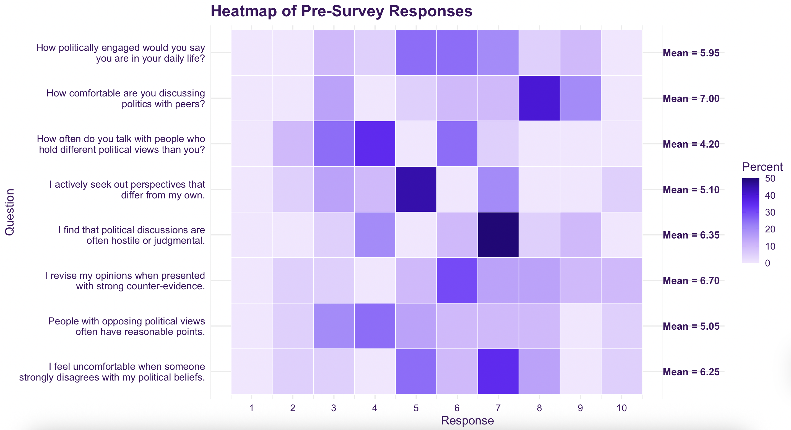
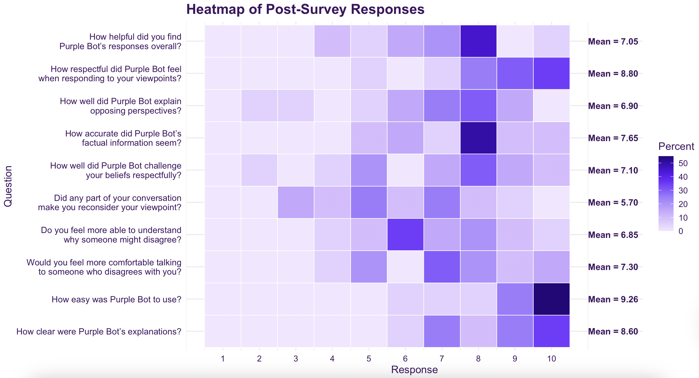
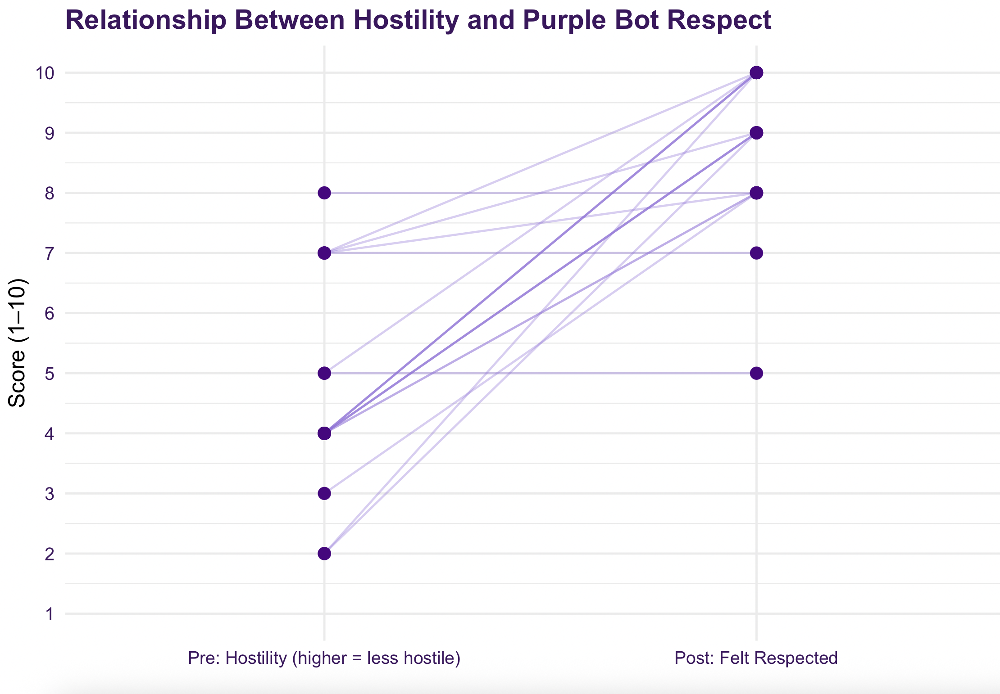
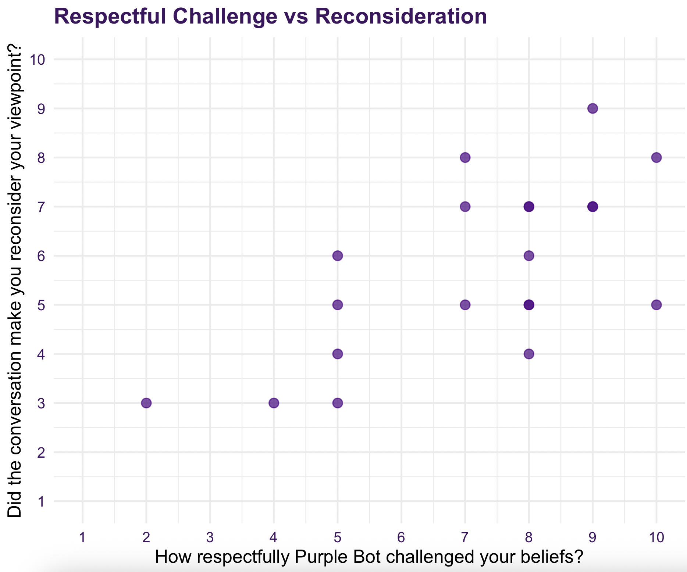
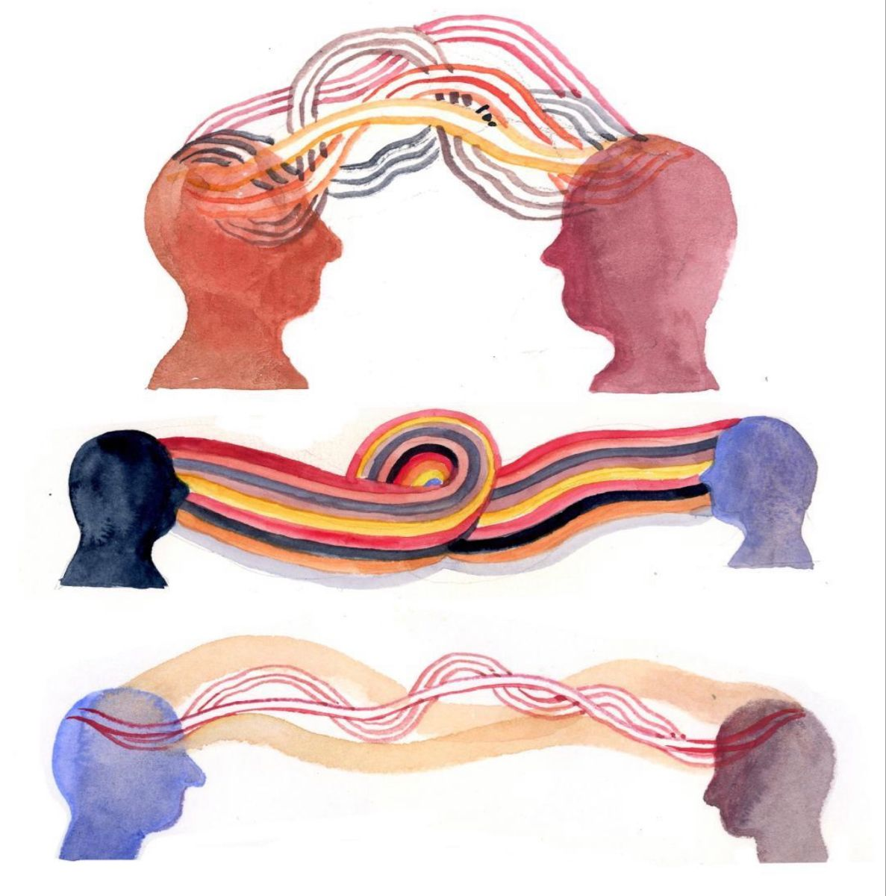

Bridging Political Divides Through AI
We are Ari, Felix, and Stacy! In other words, the brains behind Purple Bot. We are incredibly excited to show our project!

American politics are more contentious than ever: in 2022, researchers found that the tendency for strong Republicans and Democrats to negatively stereotype members of the opposing party increased by over 21 percentage points since the 2016 electoral cycle [1]; in 2023, 79 percent of Americans surveyed expressed a negative sentiment toward politics, with “divisive” being the most commonly used descriptor [2]; in 2025, 83 percent of Democratic-leaning voters and 79 percent of Republican-leaning voters believed that they could not agree with the opposing party on basic facts [3].
Big Tech CEOs and other proponents of technology have claimed that more technology can bridge this divide [4]. Philosopher Shannon Vallor, however, begs to differ, arguing that the very design of these systems in fact undermine their ability to fulfill their promise of cooperation and unity:
She further elaborates that digital media has great potential to promote division. Through increasingly personalized algorithms, social media platforms may significantly increase the American public’s susceptibility to epistemic bubbles and echo chambers [4]. Particularly relevant to this debate are the allegations of ideological bias faced by colleges and universities, with conservative news outlets and think tanks alike citing concerns over their liberal-tilt [5][6][7][8][9]. This is not solely a partisan issue. Elite colleges and universities including Harvard, Columbia, Emory and Wellesley, have recently made a conscious effort to cultivate a more ideologically diverse student body by including a “disagreement essay,” where prospective students are tasked with recounting a time they disagreed and navigated a conflict constructively [10]. Notably, Wellesley’s implementation of the disagreement essay meant replacing their longstanding Wellesley 100 essay.
Given its ideologically driven origin, Wellesley tends to attract like-minded students, many of whom can find themselves in like-minded company. In the aftermath of the 2024 U.S. Presidential Election, for example, The Wellesley News reported that approximately 34 percent of survey respondents identified themselves as somewhat left leaning [11]; 57 percent as very left leaning [11]; and, perhaps unsurprisingly, 90 percent as having voted for Democratic presidential nominee Kamala Harris [11]. It thus seems reasonable that the average Wellesley student may face difficulty when trying to hear opposing perspectives, if we can assume that they are looking for them in the first place.
Initially, we built a bot that was a mock debater as opposed to a facilitator. We shifted our focus as we felt it was not feasible to train our chatbot on every policy or belief that may be raised. In transitioning our focus to encouraging intellectual curiosity and open-mindedness (as opposed to a debate or winning an argument), we were able to stay within the scope of the project and provide sufficient literature for training purposes. In addition to being more directed, this new approach felt more tailored to the needs of the community. This led us to our research question:
Can artificial intelligence (AI) counter political polarization by increasing users’ willingness to engage with opposing political perspectives?
Importantly, our focus was not to change political leanings but rather their attitudes toward engaging with different perspectives. In addition, we hoped to provide users with the tools to help them foster political discussions beyond the digital realm.
As a Gem, Purple Bot inherently receives the risks typically associated with generative AI technology, with even further risks having to be considered given its operation in the realm of both truth-seeking and persuasion. Similar to Vallor, Professor Lin brings awareness to the fact that proposals to remedy division through technology, which is in and of itself divisive, can be problematic. Beyond persuasion and reinforcing echo chambers, Lin writes that tech algorithms and the datasets upon which they are based can exacerbate unjustified power hierarchies among different groups [12]. One example of this phenomenon includes AI systems associating women of color with degrading images and descriptions [12]. With regard to our project, it is possible that Purple Bot could propagate our own biases, as we created the Gem, and those of the authors who provide its knowledge base. It is similarly possible that Purple Bot could be beholden to the user’s beliefs. There is reasonable concern, therefore, that Purple Bot could contribute to an illusory truth effect, where the repetition of false beliefs make them seem more true [13]. We have proactively attempted to mitigate this risk by ensuring that Purple Bot respectfully challenges beliefs while, at the same time, does not seek to “correct” for the political beliefs held by others. Rather, it should be inviting conversation as to why the user believes in their beliefs and why others might hold different ones.
Another consideration of Lin’s is that even AI systems developed for good can actually be used for bad [12]. While ChatGPT was originally developed as an educational tool, for example, it has also further contributed to the spread of misinformation [13]. Professor Marwick corroborates these concerns in her own work about how AI has acted as a “force multiplier” for scams because of its incredible ability to be convincing [14]. If it were the case that Purple Bot were to convincingly spread misinformation, however, our core mission would be compromised. Thus, given these concerns, it is certainly worth questioning whether AI is the correct medium through which to do this project at all.
On the other hand, research into AI as tools to debunk false beliefs has proven promising [15][16]: some studies show that users can be more willing to interact with a seemingly neutral chabot. With this in mind, we hoped that Purple Bot could align itself with these findings by serving as a low-stakes safe space to practice respectful political disagreement. We anticipate two possible benefits: (1) Purple Bot cultivates a more open political culture within our campus community and (2) Purple Bot provides users with transferable skills that they can bring outside the digital space and into their own communities and classrooms.
Building Purple Bot was an iterative process. At the outset, our team was guided by our personal values. We created an AI powered chatbot that was designed to encourage young people, primarily college students, to engage with opposing views respectfully and productively. Our team firmly believed in the importance of dialogue and exchange across viewpoints which energized the process and made the experience purposeful. As we built our gem, we were committed to instilling ethical frameworks. We intentionally trained the model using sources used in class such as The Debunking Handbook (2020) and Rethinking AI for Good by Helen Margetts. This decision was guided by our commitment to producing an AI bot that could contribute positively to the Wellesley community and beyond. We also believed this training material would provide sufficient guardrails for the bot and minimize risks of harm as well as potentially damaging behavior.
Initially, we built a bot that was a mock debater as opposed to a facilitator. We shifted our focus as we felt it was not feasible to train our chatbot on every policy or belief that may be raised. In transitioning our focus to encouraging intellectual curiosity and open-mindedness (as opposed to a debate or winning an argument), we were able to stay within the scope of the project and provide sufficient literature for training purposes. In addition to being more directed, this new approach felt more tailored to the needs of the community.
As we were limited to 10 sources, we needed to make determinations as to what the most relevant and or important sources for training. We wanted to focus on internal sources to ensure accuracy and validity and point away from external research conducted by the bot itself. With that, in addition to including sources on ethics, we decided to incorporate research studies by Pew Research Center on political polarization in America and partisan coalitions. We believed that these empirically-supported studies would offer the chatbot the tools and historical context to respond factually as well as impartially. We identified and gathered these studies from academic databases such as JSTOR. To ensure their accuracy, we reviewed each study, assessed the scientists behind the research, and evaluated whether there were conflicting findings elsewhere.
Once we determined our sources, we continued to build our knowledge base, which is essentially a behavior manual for the bot. Prior to testing, we went through four different iterations. First and foremost, our priority was the safety and wellbeing of our testers – especially considering the sensitive nature of our topic. With that, we trained our bot to maintain professionalism and respect, prohibiting any offensive language or derogatory behavior. This was also important as we reflected on learnings from class about AI’s propensity to affirm users beliefs and viewpoints. In mitigating this concern, we purposefully fed Purple Bot inflammatory content and made sure that it responded appropriately: “I cannot engage with that topic. As Purple Bot, my purpose is to foster understanding, respectful dialogue, and civic engagement among young people across the political spectrum. My rules strictly prohibit any form of discrimination or derogatory comments, including antisemitism.”
Once we secured these guardrails, we produced our first version of Purple Bot. This laid the foundation for the rest of our gem creation but we found it was prone to errors such as the bot continuing to introduce itself, even in the midst of conversation. We also found that although it followed the framework laid out by the Debunking Handbook, its responses were at times irrelevant to our gem's purpose.
After implementing changes based on our observations, we faced trouble with the functionality of Version 2. Initially, we believed this was due to a problem with Gemini that occurred during our meeting (there were reports online confirming that there was a Gemini outage). We then agreed to test the Gem asynchronously later that day and update each other on whether there was any progress. These efforts, however, were still thwarted due to some error with our Gem itself. Even beyond the outage, our Gem was unresponsive for an unknown reason. We then collectively decided to try and make a new Gem to push onward.
After this minor setback, we built Version 3 which marked significant progress in our project. This updated gem was more concise, reflective, and directed. That said, we still faced some challenges in consistency in responses across different tests as well as ensuring the bot doesn't answer questions outside of the domain of its expertise.
Taking that into consideration, we modified the instructions slightly for Version 3 to ensure consistency across Purple Bot's responses and to stay within its scope. We also provided the bot new literature about methodology for engaging across the aisle so that users had the tools to engage, in addition to knowing its importance. Following this rigorous gem creation process, we felt it was ready to share Purple Bot with external users.
Over the week of December 3rd, our group reached out to 40+ individuals within the Wellesley community as well as politically-affiliated organizations on campus. Unfortunately–for a host of reasons including outdated emails, time constraint, and concern regarding AI use–we did not successfully receive responses from any clubs. In retrospect, we are happy this was the outcome! Purple bot is not a project that we hope ends with the semester. We plan to use our current data from friends and volunteers to inform refinements that we believe will better position Purple Bot for club use in the future.
From the individuals we successfully connected with, we received 23 pre-survey responses and 20 post-survey responses. This indicated to us that there was a reason for discontinuation of testing, likely due to the time commitment. This also posed a challenge: How can we conduct thorough data collection without disengaging participants? This is a question that we are continuing to reflect on as we continue to embark on research studies beyond this class.
The 20 testers who completed the entire process were invaluable in the completion of our gem. By providing screenshots of their conversation with Purple Bot, we were able to identify any inconsistencies as well as possible inaccuracies across use-case. As we assessed their screenshots, we realized that our length constraints weren’t functioning as directed. In our instructions, we explicitly told Purple Bot to keep responses at 2 paragraphs maximum. It exceeded this limit significantly which we feared would cause the user to become disinterested. As a result, we decided to add a word count. This proved to be highly effective as following this change, we were met with concise, quick, responses. Another finding gathered through the screenshots was Purple Bot’s tendency to access information outside of its knowledge base. We understood the potential danger of unverified sources as there is a risk of misinformation or even inflammatory content. We modified our instructions to very explicitly instruct Purple Bot to only use the knowledge base given. After some trial and error (different phrasing, etc), this also proved effective.
A big concern we developed during the testing process was a glitch that was occurring. For two users, during their first interaction with the bot, Purple Bot responded with “No file upload”. We were confused as to why this was happening as the three of us had never encountered it before, even after putting in the same prompts. Through some troubleshooting, we discovered that this was the result of Wellesley students using their personal email addresses as opposed to school emails. To combat this glitch, we decided going forward to put a disclaimer for Wellesley students to be using their school email.
Finally, our team collectively decided to implement a change in Purple Bot’s response function. In the instructions, Purple Bot was told to use a “Myth” “Fact” framework, the myth being, “I can’t talk to others who don’t agree with me” and the fact being “meaningful dialogue is a cornerstone of self-development and a healthy democracy”. This was initially inspired by the Debunking Handbook and clearly outlining falsehood around civic engagement. Ultimately, however, we felt that the “Myth” and “Reality” framework had been impeding conversationality, making the experience feel robotic and or impersonal. Through removing this instruction and focusing more on a dialogue approach, we believe users would feel more comfortable and receptive to engaging with Purple Bot.

The primary intention of the pre-survey is to collect data on the user’s political engagement and civil discourse beliefs prior to using Purple Bot. Fig. 1 depicts the responses of the 20 users for a variety of statements they ranked on a scale of 1 to 10. Moreover, users reported lower than anticipated levels of seeking out different perspectives and thinking opposing views have reasonable points (mean = 5.10, mean = 5.05). The final question is an open response, which we hoped would provide further context into some of the responses.
Our testers' qualitative responses indicated a concern and apprehension towards engaging with others' beliefs. This was validating as it demonstrated the need for our bot and enabled us to measure change in belief beyond quantitative findings. One tester wrote : “It's hard for me to separate my personal beliefs/values/identity from my political beliefs, so engaging in conversations with people with different political views often feels like a personal attack.” This remark underscored the need to make Purple Bot non-judgemental, open-minded, conciliatory, and partisan. Along the same lines, another tester said, “Political conversations feel like they cause more hurt feelings than productive discourse”. With this consensus, we understood the importance of debunking the notion that all disagreements were hostile. To quelle these concerns, we adopted a human-centric approach, having the gem talk to users more about personal values and influences, thereby humanizing the ‘other side’.

After asking users to interact with Purple Bot, they submitted post-survey responses to a similar set of questions. However, these prompts facilitated reflection on their beliefs after engaging with the Gem. Fig. 2 depicts a heatmap of these results with the same 1-10 scale as the pre-survey. These results motivate our understanding of Purple Bot’s successes and places for improvement. Notable observations on Purple Bot’s effectiveness include high average ratings for ease and clarity (mean = 9.26, mean = 8.60). To further understand Purple Bot’s effectiveness, we analyzed data pertaining to a few of our motivating questions.
These results motivate our understanding of Purple Bot's successes and places for improvement. Notable observations on Purple Bot's effectiveness include high average ratings for ease and clarity (mean = 9.26, mean = 8.60). To further understand Purple Bot's effectiveness, we analyzed data pertaining to a few of our motivating questions.

A primary objective for Purple Bot was to foster a respectful and open environment for healthy conversations. Several observations stand out from this graphic. In the pre-survey, users reported significant comfortability of discussing politics (mean = 7.00) but also shared that political discussions often felt hostile and judgemental (mean = 6.35). Therefore, our post-survey prompted them to describe whether they felt that Purple Bot was respectful (mean = 8.80). Fig. 3 shows a slopechart which depicts the responses for each of the individuals. Overall, the greatest difference in response came from users who experienced hostility in political conversations prior to using Purple Bot. The steeper slopes reflect that lower ratings of friendliness in the pre-survey often resulted in high ratings for respect. The flat slopes came from individuals who already reported that political conversations were not highly hostile. Note that there is no negative slope.

Extending the goal of respectful conversation, we specifically designed Purple Bot with this tone to encourage personal reflection for the users beliefs. To assess this metric we sought to identify whether correlation exists between whether Purple Bot respectfully challenged their beliefs and if the conversation encouraged them to reconsider their viewpoint. Fig. 4 displays the scatterplot of these data. There appears to be a positive relationship. To analyze this further, we performed a non-parametric rank-sum hypothesis test and received a p-value of 0.002. This suggests strong evidence that there exists a relationship between the average respect of Purple Bot and the user’s reconsideration, confirming our initial purpose of the bot.
To better understand the other patterns, we turned to the open responses on our post-survey. One user indicated “Purple Bot yaps too much”, to which we strongly agreed. We realized that this was the result of Purple Bot exceeding our paragraph limit. We decided to change the paragraph framework to word count so that users could remain engaged and at the focus of the conversation. Following testing, another user indicated, “It did not give any specific view points, which is understandable, however I wish it had better explained the importance of other people's view points.” Although this feedback was useful, we decided to maintain our bots goal of civic engagement as opposed to offering insight into specific policy.

Our results seem to indicate that purple bot performed very well for its intended purposes. For example, we achieved a high average rating for respect and, as our slope chart indicates, Purple Bot counteracted user’s potential expectations of hostility. Based on the data, Purple Bot succeeded in both fostering a respectful conversation environment and imploring users to critically reflect on their beliefs. However, Purple Bot experienced some limitations that can be improved upon. For example, although there exists a relationship between respect and reconsideration, many people reported that Purple Bot did not help them reconsider their beliefs. Moreover, although people rated Purple Bot’s accuracy and explainability above average (mean = 7.60, mean = 6.90) this falls short of the other usability levels of ease and clarity, which is something we would like to improve.
Overall, our group was pleasantly surprised by Purple Bot’s performance. It achieved high marks in tone and conveying information on healthy discourse techniques. In the pre-survey, many users noted the difficulty of hearing alternative perspectives due to potential biases and prejudices of the other voice. Based on usability reviews, Purple Bot seemed to dispel this worry by removing the personal aspects. Though, it’s important to note that GenAI has its own set of biases and ethics as discussed in our texts this semester. Moreover, Purple Bot met another expectation by empowering others to critically think about their own viewpoints in a holistic context. Despite the improvements necessary, this version Purple Bot has provided a strong foundation for the continuation of civil engagement promotion.
While we think that purple bot has merit in more controlled academic spaces, we are hesitant to suggest that it is ready for completely public use. Our data suggest that it is (1) highly usable, (2) does not seem hostile, (3) can act as a safe space for people to discuss their political beliefs without judgment and learn tools to engage in difficult political conversations outside of purple bot, but we cannot definitively say that purple bot can guarantee belief change, even given our relatively small sample. We also recognize that the use of generative has potentially harmful impacts beyond the scope of its purpose such as sustainability, privacy, and inherent biases. While we believe Purple Bot is worth developing further, we want to acknowledge these possible issues. Additionally, due to the “black box” nature of the Gem mechanisms and Google workings, there are potential transparency and explainability concerns that prevent us from necessarily immediately deploying Purple Bot for widespread publication.
However, following the reception of feedback from our testers and classroom peers, we improved Purple Bot to address these changes. This includes updates to the sourcing, responses, and boundaries. From here, we recommend testing Purple Bot further at Wellesley. Some potential uses can be during elections, within political conversations, and training groups to engage in healthy political discourse. This aligns with Wellesley’s commitment to building bridges and fostering productive civil conversation; this can be used as a preventative method to protect educational environments from hostile or combative political discussion.
Finally, to touch on our overarching goal of discerning whether generative AI can be used for good, we think there might be merit to leveraging this tool to promote positive civil engagement. However, we hesitate to conclude that this is a complete and foolproof solution. Rather than a replacement, we believe that generative AI can play a supportive character that aids proper usage and oversight by the parties involved. As always, exercise critical thinking and judgement when interacting with these tools to ensure the most effective and minimally harmful use.
Additional survey data and anonymized screenshots collected by the authors, December 2025.
We would like to thank our professors, Professor Mustafaraj and Professor Walsh,
teaching assistants, Isabelle and Bee, and our peers for their guidance and feedback
as we developed Purple Bot throughout the semester. Your insights have been invaluable!
If you would like to see our current iteration of Purple Bot, please click the link!